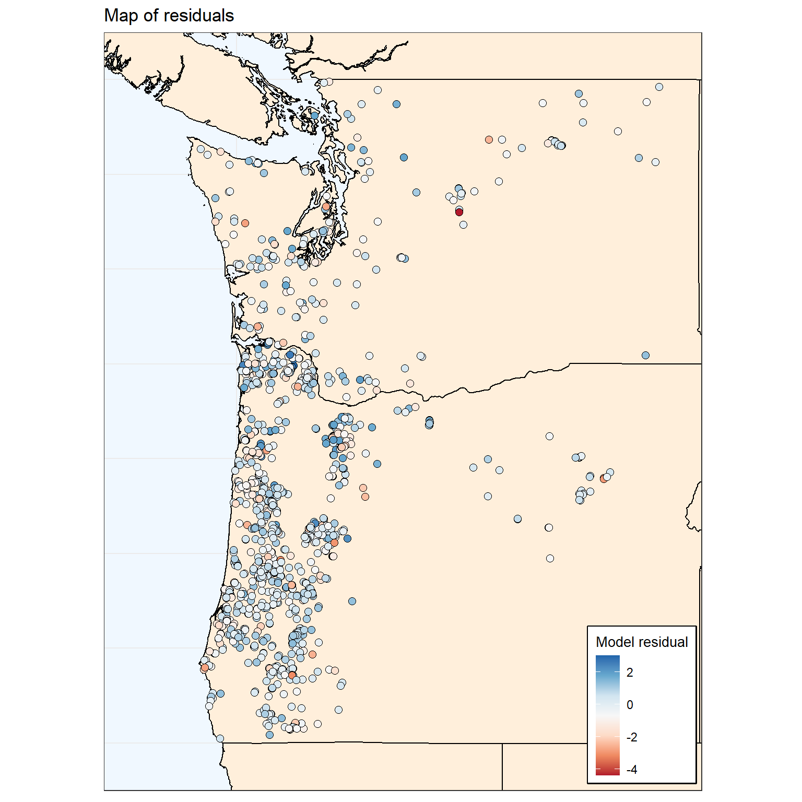
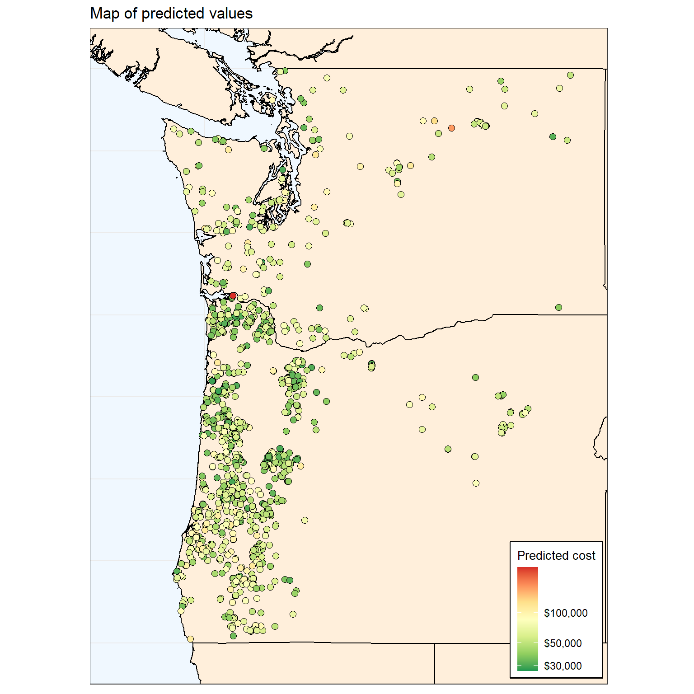

Culvert Cost Models with Spatially Explicit Data
B. Van Deynze
November 30, 2020
Incorporating costs in conservation planning
Niche: use of cost data in conservation plans
- Just as benefits, variability in costs can be large
- Including spatial variability and variability across scope and scale of project
- Understanding this variability can improve planning outcomes
- Including spatial variability and variability across scope and scale of project
Key cites
Babcock et al. 1997: https://doi.org/10.2307/3147171
- Describes relative efficiency of management rules under different joint distributions of costs and benefits
- Alternative targeting instruments considered incl. cost-targeting, benefit-targeting, and ratio-targeting (cost per benefit targeting)
- Relative variability of benefits and costs, and correlation between the two, determine effects of sub-optimal targeting

Naidoo et al. 2006: https://doi.org/10.1016/j.tree.2006.10.003
- Types of costs: acquisition, management, transaction (and opportunity, damage costs)
- (Can be continuous or one-off)
- (Can be continuous or one-off)
- Often based on non-monetary proxies
- Most often area
- Sometimes weighted but in often arbitrary ways
- Efficiency gains from incorporating costs
- Most often area
Gap
- Past looks at culverts have focused on benefits and used simplified cost models
- Past looks at conservation costs have focused on land acquisition costs rather than restoration efforts
- Unique features of culvert improvement in PNW: upstream land access model, lots of streams/roads, large variation in slope and stream size
- Unique features of culvert improvement in PNW: upstream land access model, lots of streams/roads, large variation in slope and stream size
- Timely b/c Washington culvert case
Research approach
- Examine variability in cost levels and drivers of costs across culvert projects in PNW using statistical model
- Compare levels and variability of costs to (possibly several) benefit measures
- Apply model to extant culverts to compare costs/benefit distributions over…
- Space: where are high benefit, low cost culverts?
- Observed projects vs. all culverts: what kind of decision rule is distribution of projects consistent with?
- Space: where are high benefit, low cost culverts?
RQ1: How much variability is there in costs for culvert improvements?
- Over space?
- For observed projects vs. potential projects?
- Relative to variability in benefits? (And implications for planning rules/future research)
RQ2: What are drivers of culvert improvement costs?
- Economic drivers: economies of scale, transaction costs
- Geophysical drivers: stream features, terrain features
- And are these drivers also drivers of benefits (i.e. upstream habitat quality for target species)?
Data description
The unit of observation in our data is a culvert worksite. These data include all unique worksites associated with a culvert action in the PNSHP data between 2001 and 2015. Each worksite is associated with a project, a set of geographic coordinates, and the number of culverts at the site. Projects are associated with a year, a reporting source, and a unique cost. We also calculate the number of culverts associated with the project (methods found here). Note that a project may be associated with multiple related worksites, though 66% of worksites are uniquely identified to a project.
Dependent and explanatory variables included in the empirical model are described below, including a brief justification for inclusion. A more in-depth exploration of these variables can be found in this report.
| Variable | Mean | Std. dev. | Number of levels |
|---|---|---|---|
| Cost per culvert ($USD2019) | 78,300 | 92,300 | |
| Number of worksites (count) | 2.03 | 2.57 | |
| Distance between worksites (m) | 10,900 | 69,500 | |
| Stream slope (%) | 0.0455 | 0.0406 | |
| Bankfull width (m) | 7.53 | 5.45 | |
| Terrain slope (deg) | 27.3 | 12.1 | |
| Housing density (units per sq. km) | 6.13 | 25.9 | |
| Construction employment (jobs) | 3,010 | 5,040 | |
| Ag/forestry employment (jobs) | 782 | 536 | |
| Distance to urban area (m) | 45,400 | 32,100 | |
| Paved road | 2 | ||
| Road speed class | 6 | ||
| Land cover class | 8 | ||
| Basin | 9 | ||
| Year | 15 | ||
| Reporting source | 6 |
Cost estimates
Cost per culvert ($USD, 2019) is our primary dependent variable. This variable can also be interpreted as the project average costs at the work site. This variable is constructed by dividing the provided project costs by the number of culverts associated with the project.
Stream hydrological features
- Stream slope (% grade): slope of stream at road crossing can require more expensive crossing design; identified via COMID matching with NHDPlus attributes.
- Bankfull width (m): bankfull width is the preferred measure of stream width at road crossing, accounting for potential width during high-water events; identified via COMID matching with NHDPlus attributes.
Road features
- Road paved (indicator): modification of a paved road is more expensive; may also proxy for higher traffic volumes; measured via HERE road data for nearest object.
- Road speed class (categorical): wider roads with more traffic are expected to be more expensive; measured via HERE road data for nearest object; classes range from 2 (fastest) to 7 (slowest).
| Classification | Value | Description |
|---|---|---|
| Speed category | 1 | > 130 kph / > 80 mph |
| 2 | 101-130 kph / 65-80 mph | |
| 3 | 91-100 kph / 55-64 mph | |
| 4 | 71-90 kph / 41-54 mph | |
| 5 | 51-70 kph / 31-40 mph | |
| 6 | 31-50 kph / 21-30 mph | |
| 7 | 11-30 kph / 6-20 mph | |
| 8 | < 11 kph / < 6 mph |
Terrain features
Terrain slope (degrees): steeper terrain is expected to require more expensive projects; measured by the
GTOPO30 grid cell the worksite falls inslope recorded for the catchment the stream is associated with, as opposed to the stream slope.Land cover (categorical): different land covers may be associated more expensive projects (e.g. less accessible sites in forest, difficult soils in welands, etc.); identified via cover with worksite coordinates and NLCD land cover layer for nearest available year; here we use the broader NLCD Group definition rather than the more detailed classification (see below).
Elevation (m): mean elevation in meters in NHDPlus catchment.
| Group | Value | Classification | Description |
|---|---|---|---|
| Barren | 31 | Barren land (rock/sand/clay) | Areas of bedrock, desert pavement, scarps, talus, slides, volcanic material, glacial debris, sand dunes, strip mines, gravel pits and other accumulations of earthen material. Generally, vegetation accounts for less than 15% of total cover. |
| Developed | 21 | Developed, open space | Areas with a mixture of some constructed materials, but mostly vegetation in the form of lawn grasses. Impervious surfaces account for less than 20% of total cover. These areas most commonly include large-lot single-family housing units, parks, golf courses, and vegetation planted in developed settings for recreation, erosion control, or aesthetic purposes. |
| Developed | 22 | Developed, low intensity | Areas with a mixture of constructed materials and vegetation. Impervious surfaces account for 20% to 49% percent of total cover. These areas most commonly include single-family housing units. |
| Developed | 23 | Developed, medium intensity | Areas with a mixture of constructed materials and vegetation. Impervious surfaces account for 50% to 79% of the total cover. These areas most commonly include single-family housing units. |
| Developed | 24 | Developed high intensity | Highly developed areas where people reside or work in high numbers. Examples include apartment complexes, row houses and commercial/industrial. Impervious surfaces account for 80% to 100% of the total cover. |
| Forest | 41 | Deciduous forest | Areas dominated by trees generally greater than 5 meters tall, and greater than 20% of total vegetation cover. More than 75% of the tree species shed foliage simultaneously in response to seasonal change. |
| Forest | 42 | Evergreen forest | Areas dominated by trees generally greater than 5 meters tall, and greater than 20% of total vegetation cover. More than 75% of the tree species maintain their leaves all year. Canopy is never without green foliage. |
| Forest | 43 | Mixed forest | Areas dominated by trees generally greater than 5 meters tall, and greater than 20% of total vegetation cover. Neither deciduous nor evergreen species are greater than 75% of total tree cover. |
| Herbaceous | 71 | Grassland/herbaceous | Areas dominated by gramanoid or herbaceous vegetation, generally greater than 80% of total vegetation. These areas are not subject to intensive management such as tilling, but can be utilized for grazing. |
| Planted-cultivated | 81 | Pasture/hay-areas of grasses, legumes, or grass | Legume mixtures planted for livestock grazing or the production of seed or hay crops, typically on a perennial cycle. Pasture/hay vegetation accounts for greater than 20% of total vegetation. |
| Planted-cultivated | 82 | Cultivated crops | Areas used for the production of annual crops, such as corn, soybeans, vegetables, tobacco, and cotton, and also perennial woody crops such as orchards and vineyards. Crop vegetation accounts for greater than 20% of total vegetation. This class also includes all land being actively tilled. |
| Shrubland | 52 | Shrub/scrub | Areas dominated by shrubs; less than 5 meters tall with shrub canopy typically greater than 20% of total vegetation. This class includes true shrubs, young trees in an early successional stage or trees stunted from environmental conditions. |
| Water | 11 | Open water | Areas of open water, generally with less than 25% cover of vegetation or soil. |
| Water | 12 | Perennial ice/snow | Areas characterized by a perennial cover of ice and/or snow, generally greater than 25% of total cover. |
| Wetlands | 90 | Woody wetlands | Areas where forest or shrubland vegetation accounts for greater than 20% of vegetative cover and the soil or substrate is periodically saturated with or covered with water. |
| Wetlands | 95 | Emergent herbaceous wetlands | Areas where perennial herbaceous vegetation accounts for greater than 80% of vegetative cover and the soil or substrate is periodically saturated with or covered with water. |
Scale and scope controls
- Number of worksites associated with project (count): addressing multiple culverts under the same project may provide scale benefits, but might also increase complexity; measured via PNSHP database.
- Distance between project worksites (m): more dispersed worksites under a single project may increase project costs due to increased transportation costs (and time); measured as the total euclidean distance between worksites for multiple worksite projects. This variable is interacted with the number of worksites to allow flexible corrdination/scale effects.
- Action type (categorical): PNSHP distinguishes between culvert removals and culvert installations, in addition to culvert improvements (the dominate category); we expect removals to be cheapest, followed by improvements and installations; dummies are included when a project includes one or more culverts flagged as either removals or installations.
Fixed effects
- Year: the year the project was completed
- Basin: the basin (HUC6) where the worksite is located
- Reporting source: the reporting source for the project
Simple correlations across variables
Here we present a couple measures of correlation between potential continuous explanatory variables. The figure below show provides Pearson’s correlation coefficients for each pair of continuous explanatory variables included in the initial models, along side the dependent variable. Also included is the Variance Inflation Factor for each variable as calculated when all presented variables are included in a simple log-linear model, with cost per culvert as the dependent variable. Because of previously mentioned high correlation between housing density and population density, we include only housing density.

It looks like distance between worksites and the number of culverts is positively correlated, and both are negatively correlated with average project costs. We would expect distance to increase costs but the number of culverts to decrease costs (due to economies of scale), all else equal. Disentangling these effects should be possible with multiple regression.
Stream slope is negatively correlated with bankfull width, which means wider streams tend to be less steep. Stream slope is also positively correlated with terrain slope, as mentioned earlier. None of the three are strongly correlated with costs.
Finally, the two employment variables are positively correlated, and construction employment is positively correlated with housing density. Ag/forestry employment is weakly positively correlated with measures that indicate more rugged terrain such as stream and terrain slope. Housing density and to a lesser degree construction employment are positively correlated with costs.
No variables have particularly large VIFs, suggesting little potential for error-inflating multicollinearity. (A large VIF indicates that the variable is strongly correlated with the other variables in the model, leading to inflated standard errors and limiting the model’s usefulness for prediction or inference.)
Estimation
We estimate log-linear models estimated via OLS, with the average project cost as the dependent variable and the worksite as the unit of observation. Stream slope and bankfull width are interacted in this specification. Recommendations in culvert engineering reports indicate that more expensive culvert designs are particularly necessary when both of these variables are extreme, and an interaction term can capture this effect.
In addition to the fully specified model (mod_full), we present thirteen alternative models that include different fixed effects configurations or only sub-samples of the data focused on basin or reporting source criteria. For basins, we provide results estimated on a “core” group representing the five most frequently represented basins (Washington Coastal, Puget Sound, Southern Oregon Coastal, Northern Oregon Coastal, Willamette), as well as that core separated into basins primarily in Western Washington and Oregon respectively. For reporting sources, we focus on a similar “core” group ( Washington Recreation and Conservation Office, Oregon Water Resources Inventory, Habitat Work Schedule, Bureau of Land Management, Regional Ecosystem Office [an interagency group]), as well as versions estimated only on OWRI and WA RCO projects.
The resulting coefficients for the fixed effects and categorical variables, when exponentiated, can be interpreted as the ratio of average costs for that group relative those of the base group. Results for continuous variables are presented as exponentiated average marginal effect of a single standard deviation change, which can be interpreted as the ratio of costs relative to a worksite with a standard deviation lower for the variable.
Coefficient estimates
| Term | mod_full | mod_nofe | mod_nofe_nobasin | mod_nofe_nosource | mod_nofe_noyear | mod_nofe_onlybasin | mod_nofe_onlysource | mod_nofe_onlyyear | mod_basins_core | mod_basins_wore | mod_basins_wwash | mod_sources_core | mod_sources_owri | mod_sources_warco |
|---|---|---|---|---|---|---|---|---|---|---|---|---|---|---|
| Intercept |
10.9*** (1.04) |
11.7*** (1.14) |
11.3*** (1.04) |
11.2*** (1.08) |
11.3*** (1.05) |
11.6*** (1.1) |
11.9*** (1.06) |
10.9*** (1.11) |
10.5*** (0.311) |
10.5*** (0.324) |
9.57*** (1.02) |
11.1*** (1.09) |
11.9*** (1.07) |
11.9*** (1.63) |
| Stream slope |
-3.19* (1.66) |
-4.52** (1.8) |
-2.74* (1.65) |
-3.78** (1.71) |
-3.06* (1.67) |
-3.61** (1.74) |
-2.69 (1.67) |
-4.61*** (1.75) |
-3.96** (1.9) |
-3.94** (2) |
-10.6* (6.1) |
-3.85** (1.74) |
-3.19 (2.53) |
-6.13 (6.17) |
| Bankfull width |
-0.00395 (0.00593) |
-0.000258 (0.00653) |
-0.00204 (0.00597) |
-0.00407 (0.00615) |
-0.00213 (0.00599) |
-0.00267 (0.00625) |
0.0000967 (0.00607) |
-0.00241 (0.00634) |
-0.00352 (0.00612) |
-0.00206 (0.00681) |
0.00649 (0.014) |
-0.00445 (0.00631) |
0.00458 (0.00814) |
0.0138 (0.015) |
| Stream slope X bankfull width |
0.862*** (0.327) |
1.23*** (0.358) |
0.919*** (0.329) |
0.952*** (0.337) |
0.791** (0.331) |
0.908*** (0.342) |
0.843** (0.334) |
1.22*** (0.348) |
1.11*** (0.395) |
0.978** (0.414) |
2.69* (1.44) |
0.963*** (0.342) |
1.4** (0.546) |
0.315 (1.19) |
| Road paved (dummy) |
0.281*** (0.107) |
0.355*** (0.116) |
0.275*** (0.106) |
0.279** (0.111) |
0.321*** (0.107) |
0.319*** (0.111) |
0.322*** (0.107) |
0.322*** (0.113) |
0.216* (0.117) |
0.13 (0.128) |
0.628* (0.335) |
0.291** (0.114) |
0.0528 (0.146) |
0.746** (0.368) |
| Road speed class: 4 |
-0.0745 (0.3) |
0.255 (0.332) |
-0.00334 (0.305) |
-0.212 (0.312) |
-0.113 (0.302) |
-0.156 (0.315) |
-0.0319 (0.308) |
0.0866 (0.323) |
-0.111 (0.312) |
0.165 (0.365) |
‒ |
-0.21 (0.319) |
-0.127 (0.443) |
‒ |
| Road speed class: 5 |
-0.0869 (0.22) |
0.0273 (0.244) |
-0.0441 (0.223) |
-0.164 (0.228) |
-0.0772 (0.221) |
-0.109 (0.231) |
-0.0311 (0.226) |
-0.0559 (0.238) |
-0.163 (0.229) |
-0.204 (0.227) |
0.182 (0.43) |
-0.175 (0.233) |
-0.387 (0.29) |
0.279 (0.545) |
| Road speed class: 6 |
-0.256 (0.226) |
0.132 (0.246) |
-0.169 (0.228) |
-0.372 (0.234) |
-0.265 (0.227) |
-0.349 (0.237) |
-0.176 (0.231) |
-0.00316 (0.24) |
-0.384 (0.237) |
-0.537** (0.241) |
0.194 (0.368) |
-0.398* (0.239) |
-0.548* (0.304) |
0.408 (0.429) |
| Road speed class: 7 |
-0.195 (0.235) |
-0.00514 (0.259) |
-0.142 (0.237) |
-0.286 (0.244) |
-0.156 (0.237) |
-0.2 (0.248) |
-0.0988 (0.24) |
-0.115 (0.253) |
-0.344 (0.249) |
-0.438* (0.252) |
0.294 (0.511) |
-0.3 (0.25) |
-0.674** (0.311) |
0.8 (0.579) |
| Road speed class: 8 |
-0.453* (0.24) |
-0.311 (0.265) |
-0.426* (0.243) |
-0.561** (0.249) |
-0.417* (0.241) |
-0.49* (0.252) |
-0.384 (0.246) |
-0.413 (0.258) |
-0.567** (0.253) |
-0.663*** (0.256) |
0.277 (0.521) |
-0.571** (0.255) |
-0.784** (0.316) |
0.89 (0.617) |
| Terrain slope |
0.00569* (0.00329) |
0.00639** (0.00323) |
0.00202 (0.00309) |
0.00909*** (0.00339) |
0.00659** (0.00332) |
0.0109*** (0.00343) |
0.00253 (0.00314) |
0.00598* (0.00315) |
0.00902*** (0.00349) |
0.0107*** (0.00375) |
0.0126 (0.0137) |
0.00936*** (0.00345) |
0.00841* (0.00471) |
-0.00787 (0.0127) |
| Elevation |
-0.000151 (0.000166) |
0.000189 (0.000129) |
-0.000111 (0.000124) |
0.0000956 (0.000169) |
-0.000195 (0.000167) |
0.0000768 (0.000171) |
-0.000112 (0.000125) |
0.000157 (0.000127) |
-0.000393** (0.000191) |
-0.000271 (0.000197) |
-0.00114 (0.00138) |
0.0000977 (0.000171) |
-0.000404 (0.000277) |
0.00237** (0.000907) |
| Land cover: Developed |
-0.727 (0.997) |
-1.2 (1.11) |
-1.2 (1.01) |
-0.666 (1.04) |
-0.873 (1.01) |
-0.757 (1.05) |
-1.51 (1.02) |
-0.965 (1.07) |
‒ | ‒ | ‒ |
-0.654 (1.04) |
-1.08 (0.987) |
‒ |
| Land cover: Forest |
-1.09 (0.998) |
-1.67 (1.11) |
-1.54 (1.01) |
-1.06 (1.04) |
-1.26 (1.01) |
-1.22 (1.05) |
-1.88* (1.02) |
-1.35 (1.07) |
-0.359*** (0.0773) |
-0.36*** (0.0814) |
-0.226 (0.239) |
-1.05 (1.04) |
-1.58 (0.989) |
0.033 (0.272) |
| Land cover: Herbaceous |
-1.13 (1.01) |
-1.7 (1.12) |
-1.55 (1.02) |
-1.11 (1.05) |
-1.29 (1.02) |
-1.25 (1.07) |
-1.88* (1.04) |
-1.4 (1.08) |
-0.452** (0.186) |
-0.522*** (0.188) |
2.47** (1.05) |
-1.1 (1.05) |
-1.41 (1.01) |
1.35* (0.736) |
| Land cover: Planted-cultivated |
-0.64 (1.01) |
-1.3 (1.12) |
-1.05 (1.01) |
-0.662 (1.04) |
-0.87 (1.02) |
-0.893 (1.06) |
-1.44 (1.03) |
-0.91 (1.08) |
0.083 (0.158) |
0.0966 (0.172) |
-0.61 (0.435) |
-0.655 (1.05) |
-1.18 (0.998) |
-0.426 (0.511) |
| Land cover: Shrubland |
-0.828 (1) |
-1.35 (1.11) |
-1.26 (1.01) |
-0.831 (1.04) |
-0.986 (1.01) |
-0.981 (1.06) |
-1.57 (1.03) |
-1.06 (1.08) |
-0.142 (0.145) |
-0.233 (0.153) |
0.328 (0.448) |
-0.813 (1.04) |
-1.59 (0.999) |
0.594 (0.391) |
| Land cover: Water |
-1.11 (1.08) |
-1.6 (1.2) |
-1.57 (1.09) |
-0.93 (1.12) |
-1.4 (1.09) |
-1.12 (1.14) |
-2.07* (1.11) |
-1.23 (1.16) |
-0.471 (0.503) |
-0.436 (0.498) |
‒ |
-0.903 (1.12) |
-1.18 (1.2) |
-1.33 (1.09) |
| Land cover: Wetlands |
-0.912 (1) |
-1.38 (1.11) |
-1.35 (1.01) |
-0.907 (1.04) |
-1.08 (1.01) |
-1.04 (1.06) |
-1.69 (1.03) |
-1.15 (1.08) |
-0.297** (0.138) |
-0.357** (0.159) |
-0.321 (0.307) |
-0.876 (1.04) |
-1.2 (0.992) |
0.234 (0.325) |
| Housing density |
0.000472 (0.0011) |
0.00335*** (0.00115) |
0.000904 (0.00108) |
0.000733 (0.00114) |
0.000519 (0.00111) |
0.000935 (0.00115) |
0.000918 (0.0011) |
0.00285** (0.00112) |
0.000722 (0.00111) |
0.0105*** (0.00257) |
-0.000374 (0.00136) |
0.000785 (0.00114) |
0.0116*** (0.00263) |
-0.00372 (0.00252) |
| Ag/forestry employment |
0.0000486 (0.0000662) |
0.0000151 (0.0000656) |
-0.00000325 (0.0000616) |
0.0000977 (0.0000682) |
0.0000681 (0.0000663) |
0.000113* (0.0000688) |
0.0000152 (0.0000622) |
0.0000437 (0.0000647) |
0.0000846 (0.0000712) |
0.000146* (0.0000766) |
-0.0000738 (0.000299) |
0.000107 (0.0000689) |
0.000306*** (0.0000896) |
0.000345 (0.000285) |
| Construction employment |
0.00000268 (0.00000714) |
0.0000174** (0.00000683) |
0.00000986 (0.00000641) |
-0.00000315 (0.00000738) |
0.00000517 (0.00000716) |
-0.00000121 (0.00000744) |
0.0000128** (0.00000648) |
0.0000122* (0.00000669) |
-0.00000068 (0.00000731) |
-0.0000164 (0.0000142) |
0.00000432 (0.0000147) |
-0.00000317 (0.00000746) |
-0.0000274* (0.000015) |
-0.0000125 (0.0000149) |
| Distance to urban area |
0.00000309** (0.00000133) |
0.00000345*** (0.00000111) |
0.00000293*** (0.00000103) |
0.000000373 (0.00000131) |
0.0000029** (0.0000013) |
0.000000409 (0.00000132) |
0.00000296*** (0.00000104) |
0.00000259** (0.0000011) |
0.00000239 (0.00000156) |
0.00000233 (0.00000179) |
0.000000855 (0.00000376) |
0.000000457 (0.00000133) |
-0.00000264 (0.0000024) |
0.00000666 (0.00000439) |
| Number of worksites |
-0.182*** (0.0218) |
-0.171*** (0.0222) |
-0.165*** (0.0211) |
-0.173*** (0.0223) |
-0.194*** (0.0215) |
-0.188*** (0.0221) |
-0.176*** (0.0209) |
-0.158*** (0.0222) |
-0.272*** (0.0266) |
-0.291*** (0.0276) |
0.577 (0.444) |
-0.174*** (0.0226) |
-0.212*** (0.0324) |
-1.18 (1.26) |
| Distance between worksites |
0.00000917** (0.00000397) |
0.00000256 (0.00000429) |
0.00000777* (0.00000401) |
0.00000976** (0.00000411) |
0.000005 (0.00000393) |
0.00000395 (0.00000409) |
0.00000268 (0.00000399) |
0.00000925** (0.00000426) |
0.0000128*** (0.000004) |
0.0000155*** (0.00000408) |
-0.00036 (0.000498) |
0.00000953** (0.00000414) |
-0.0000411* (0.0000228) |
-0.000499 (0.000756) |
| Number of worksites X distance |
-0.000000537** (0.000000217) |
-0.0000000905 (0.000000225) |
-0.000000495** (0.00000022) |
-0.000000576** (0.000000224) |
-0.000000227 (0.000000206) |
-0.00000012 (0.000000214) |
-0.000000135 (0.00000021) |
-0.000000607*** (0.000000232) |
-0.0000006*** (0.000000217) |
-0.000000709*** (0.000000228) |
0.0000398 (0.0000653) |
-0.000000547** (0.000000232) |
0.00000878** (0.00000381) |
0.000234*** (0.0000869) |
| Culvert installation (dummy) |
0.215 (0.132) |
0.881*** (0.124) |
0.18 (0.132) |
0.517*** (0.131) |
0.418*** (0.124) |
0.695*** (0.123) |
0.425*** (0.123) |
0.64*** (0.131) |
0.148 (0.153) |
0.13 (0.172) |
0.608 (0.42) |
0.503*** (0.136) |
-0.307 (0.355) |
1.96 (1.19) |
| Culvert removal (dummy) |
-0.112 (0.0777) |
-0.258*** (0.0796) |
-0.108 (0.0781) |
-0.208*** (0.0791) |
0.00366 (0.0761) |
-0.112 (0.0777) |
0.0366 (0.0769) |
-0.347*** (0.08) |
-0.131 (0.0819) |
-0.142* (0.0841) |
0.736* (0.402) |
-0.228*** (0.0808) |
0.0756 (0.0889) |
0.654 (0.459) |
| Project source: BLM |
0.876*** (0.121) |
‒ |
0.916*** (0.116) |
‒ |
0.914*** (0.116) |
‒ |
0.95*** (0.114) |
‒ |
0.877*** (0.122) |
0.853*** (0.123) |
‒ | ‒ | ‒ | ‒ |
| Project source: HABITAT WORK SCHEDULE |
0.996*** (0.254) |
‒ |
1.48*** (0.181) |
‒ |
0.827*** (0.236) |
‒ |
1.41*** (0.167) |
‒ |
0.776* (0.411) |
‒ | ‒ | ‒ | ‒ | ‒ |
| Project source: REO |
0.846*** (0.0928) |
‒ |
0.892*** (0.088) |
‒ |
0.856*** (0.0878) |
‒ |
0.907*** (0.0846) |
‒ |
0.902*** (0.0977) |
0.886*** (0.101) |
-0.181 (0.669) |
‒ | ‒ | ‒ |
| Project source: SRFBD |
0.959*** (0.258) |
‒ |
1.34*** (0.237) |
‒ |
0.771*** (0.245) |
‒ |
1.2*** (0.224) |
‒ |
1.12*** (0.351) |
1.3*** (0.46) |
-0.625 (0.501) |
‒ | ‒ | ‒ |
| Project source: WA RCO |
0.371* (0.202) |
‒ |
0.938*** (0.123) |
‒ |
0.256 (0.187) |
‒ |
0.923*** (0.112) |
‒ |
0.464 (0.372) |
‒ |
-0.483 (0.306) |
‒ | ‒ | ‒ |
| Year: 2002 |
0.189* (0.111) |
‒ |
0.23** (0.112) |
0.427*** (0.112) |
‒ | ‒ | ‒ |
0.539*** (0.117) |
0.195* (0.114) |
0.211* (0.114) |
0.177 (0.922) |
0.425*** (0.113) |
0.38*** (0.129) |
-0.558 (1.06) |
| Year: 2003 |
0.272** (0.119) |
‒ |
0.327*** (0.121) |
0.56*** (0.12) |
‒ | ‒ | ‒ |
0.715*** (0.125) |
0.186 (0.123) |
0.162 (0.124) |
1.79** (0.863) |
0.557*** (0.121) |
0.379** (0.149) |
0.0804 (1.13) |
| Year: 2004 |
0.627*** (0.119) |
‒ |
0.742*** (0.119) |
0.79*** (0.121) |
‒ | ‒ | ‒ |
1*** (0.125) |
0.599*** (0.124) |
0.618*** (0.129) |
0.951 (0.749) |
0.791*** (0.122) |
0.427*** (0.143) |
-0.805 (1.02) |
| Year: 2005 |
0.4*** (0.118) |
‒ |
0.456*** (0.12) |
0.562*** (0.121) |
‒ | ‒ | ‒ |
0.744*** (0.125) |
0.331*** (0.121) |
0.292** (0.123) |
0.842 (0.72) |
0.559*** (0.122) |
0.134 (0.137) |
-0.646 (1) |
| Year: 2006 |
0.478*** (0.124) |
‒ |
0.588*** (0.124) |
0.603*** (0.128) |
‒ | ‒ | ‒ |
0.822*** (0.131) |
0.392*** (0.129) |
0.427*** (0.131) |
1.2 (0.766) |
0.598*** (0.129) |
0.431*** (0.141) |
-1.39 (1.04) |
| Year: 2007 |
0.482*** (0.137) |
‒ |
0.573*** (0.137) |
0.698*** (0.14) |
‒ | ‒ | ‒ |
0.935*** (0.142) |
0.297** (0.148) |
0.314** (0.157) |
1.16* (0.69) |
0.697*** (0.141) |
0.413** (0.166) |
-0.502 (0.995) |
| Year: 2008 |
-0.0137 (0.212) |
‒ |
-0.0252 (0.213) |
0.483** (0.21) |
‒ | ‒ | ‒ |
0.786*** (0.215) |
-0.154 (0.232) |
-0.369 (0.302) |
0.916 (0.768) |
0.415* (0.221) |
‒ |
-1.25 (0.995) |
| Year: 2009 |
0.411** (0.196) |
‒ |
0.337* (0.197) |
0.956*** (0.196) |
‒ | ‒ | ‒ |
1.09*** (0.201) |
0.281 (0.214) |
0.47* (0.241) |
0.435 (0.76) |
0.88*** (0.201) |
‒ |
-1.07 (1.03) |
| Year: 2010 |
0.305 (0.196) |
‒ |
0.26 (0.193) |
0.661*** (0.192) |
‒ | ‒ | ‒ |
1.02*** (0.191) |
-0.0631 (0.259) |
0.693* (0.385) |
0.236 (0.755) |
0.646*** (0.196) |
0.866 (0.968) |
-1.61 (0.988) |
| Year: 2011 |
-0.0316 (0.19) |
‒ |
0.034 (0.192) |
0.447** (0.187) |
‒ | ‒ | ‒ |
0.946*** (0.186) |
-0.0539 (0.208) |
-0.31 (0.304) |
1.08 (0.753) |
0.436** (0.19) |
-0.401 (0.968) |
-1.1 (1.01) |
| Year: 2012 |
-0.0669 (0.222) |
‒ |
-0.0199 (0.225) |
0.303 (0.224) |
‒ | ‒ | ‒ |
0.658*** (0.229) |
-0.146 (0.231) |
-0.23 (0.282) |
0.861 (0.754) |
0.391 (0.246) |
-0.773 (0.523) |
-0.349 (1.02) |
| Year: 2013 |
0.128 (0.194) |
‒ |
0.181 (0.197) |
0.241 (0.202) |
‒ | ‒ | ‒ |
0.336 (0.21) |
0.0876 (0.196) |
-0.0365 (0.202) |
1.92** (0.901) |
0.129 (0.207) |
-0.0281 (0.221) |
‒ |
| Year: 2014 |
0.191 (0.242) |
‒ |
0.266 (0.245) |
0.278 (0.25) |
‒ | ‒ | ‒ |
0.368 (0.26) |
0.334 (0.258) |
0.344 (0.262) |
1.49 (1.27) |
0.259 (0.264) |
0.213 (0.263) |
‒ |
| Year: 2015 |
0.942** (0.433) |
‒ |
1.02** (0.438) |
1.64*** (0.436) |
‒ | ‒ | ‒ |
1.95*** (0.45) |
0.793* (0.436) |
0.69 (0.564) |
1.9** (0.944) |
1.49** (0.597) |
‒ | ‒ |
| Basin: JOHN DAY |
-0.0733 (0.295) |
‒ | ‒ |
0.0749 (0.301) |
0.0204 (0.294) |
0.214 (0.302) |
‒ | ‒ | ‒ | ‒ | ‒ |
0.0309 (0.309) |
0.921* (0.52) |
‒ |
| Basin: LOWER COLUMBIA |
0.592*** (0.166) |
‒ | ‒ |
0.31* (0.165) |
0.698*** (0.165) |
0.422** (0.165) |
‒ | ‒ | ‒ | ‒ | ‒ |
0.326* (0.166) |
0.381* (0.211) |
‒ |
| Basin: MIDDLE COLUMBIA |
0.812*** (0.242) |
‒ | ‒ |
0.655*** (0.24) |
0.963*** (0.239) |
0.795*** (0.239) |
‒ | ‒ | ‒ | ‒ | ‒ |
0.742*** (0.252) |
0.893* (0.491) |
-1.74** (0.823) |
| Basin: NORTHERN OREGON COASTAL |
-0.267*** (0.0998) |
‒ | ‒ |
-0.549*** (0.099) |
-0.302*** (0.0989) |
-0.58*** (0.0994) |
‒ | ‒ |
-0.22** (0.103) |
-0.194* (0.106) |
‒ |
-0.544*** (0.0999) |
-0.473*** (0.141) |
‒ |
| Basin: PUGET SOUND |
0.772*** (0.23) |
‒ | ‒ |
0.936*** (0.185) |
0.879*** (0.23) |
1.03*** (0.183) |
‒ | ‒ |
0.943*** (0.361) |
‒ | ‒ |
0.935*** (0.19) |
‒ |
0.0898 (0.319) |
| Basin: UPPER COLUMBIA |
0.33 (0.239) |
‒ | ‒ |
0.415** (0.199) |
0.495** (0.24) |
0.553*** (0.194) |
‒ | ‒ | ‒ | ‒ | ‒ |
0.439** (0.204) |
‒ |
-2.04*** (0.74) |
| Basin: WASHINGTON COASTAL |
0.594*** (0.222) |
‒ | ‒ |
0.611*** (0.168) |
0.707*** (0.22) |
0.765*** (0.162) |
‒ | ‒ |
0.58 (0.356) |
‒ |
0.0511 (0.289) |
0.545*** (0.18) |
‒ |
-0.352 (0.353) |
| Basin: WILLAMETTE |
0.138 (0.112) |
‒ | ‒ |
-0.194* (0.108) |
0.133 (0.11) |
-0.197* (0.109) |
‒ | ‒ |
0.161 (0.117) |
0.184 (0.129) |
‒ |
-0.197* (0.11) |
0.00724 (0.172) |
‒ |
| Adj. R2 | 0.419 | 0.266 | 0.397 | 0.372 | 0.401 | 0.346 | 0.372 | 0.314 | 0.453 | 0.456 | 0.288 | 0.365 | 0.297 | 0.21 |
| AIC | 3769 | 4053.7 | 3809.1 | 3867.7 | 3794.8 | 3908.4 | 3850.8 | 3976.4 | 3275.9 | 2848 | 406.6 | 3808 | 1971.6 | 365.2 |
| BIC | 4059.8 | 4204.3 | 4058.4 | 4132.6 | 4013 | 4100.6 | 4027.4 | 4199.7 | 3534 | 3079.9 | 535.7 | 4072 | 2176.6 | 483.9 |
| N | 1330 | 1330 | 1330 | 1330 | 1330 | 1330 | 1330 | 1330 | 1164 | 1025 | 138 | 1307 | 701 | 124 |
| * p < 0.1, ** p < 0.05, *** p < 0.01 |
Model fit discussion
The full model has an adjusted R-squared of 0.419, indicating a decent model fit. The version of the model with no fixed effects has an adjusted R-squared of 0.266, indicating that a significant amount of variability is explained by the additional explanatory variables. When fixed effect categories are removed, we can check with fixed effects explain the most variation relative to each other. It looks like reporting source accounts for the most variation, followed by basin then year.
When the model is fit only on culverts in the “core” basins, adjusted R-squared improves slightly, indicating the model performs better in these basins relative to the ones with less representation in the sample. This is particularly true for the Western Oregon basins where the model still has a pretty high R-squared. It’s harder to say whether the reduced R-squared for the Western Washington basins is due to weaker model fit or simply small sample size.
When the model is fit only on the “core” reporting sources, R-squared drops significantly. This might be evidence that including the additional sources is important for improving the overall fit of the model, even though less than 100 observations are lost.
Model visualizations
Slope and bankfull width interaction effect


Worksites are distributed along a slope - bankfull width convex curve, with few projects both high slope and high width. This pattern mirrors the cost contours over slope - bankfull width space. Comparing the observed projects to other culverts in the Washington or Oregon inventories will show whether this relationship exists for all culverts or whether projects were selected along the cost curve. That is, would projects that did not occur exist in the upper-right space?
Number of worksites and total distance interaction effect

We can repeat the exercise for the number of worksites and total distance between worksites to examine the trade-off between economies of scale from grouping multiple worksites under one project and increased costs in coordination as proxied by distance. The contours of this cost surface can be interpreted as the distance limit for which adding an additional worksite to a project is associated with economies or dis-economies of scale. For example, for a potential project with two worksites located 15km apart (indicated by an X), if a third worksite would increase the total distance between worksites beyond the distance where the cost contour (indicated by the dashed line) crosses three worksites, then expanding the project would be associated with dis-economies of scale. That these contours tend to be quite steep indicates strong potential for economies of scale when opprotunities to group nearby worksites under a single project arise.
Continuous variables
To display how costs vary across the continuous explanatory variables, we plot average marginal effects. These are scaled to a standard deviation change for each variable. Average marginal effects are calculated with other variables held at their means, which is most relevant for slope and bankfull width for which the model allows an interaction effect. The resulting estimate is exponentiated so that it can be interpreted as the expected ratio of costs resulting from a standard deviation change in the continuous variable.

A standard deviation increase in number of worksites are associated with 50% lower average costs in the preferred model when other variables, most importantly distance between worksites, are held at their means. On the other hand, a standard deviation increase in distance between worksites is associated with average costs around three times as high, and, of course, one cannot be increased without also increasing the other. This conflict is at the core of the managerial tradeoffs to consider when grouping worksites under a single project.
The average marginal effects for all population features other than distance to the nearest urban area are insignificant in the preferred model. However, in some of the alternative models, housing density has a slight positive association with costs. The housing density effect might be evidence of increased access costs due to negotiating with multiple landowners.
Bankfull width and stream slope both have significant positive associations in the preferred models. A standard deviation increase in either is associated with about fifty percent higher average costs when the other is held at its mean. As seen in the earlier figure and raw coefficients, this effect is driven largely by the interaction term in the model.
Fixed effects and categorical variables
We can examine the fixed effect estimates to compare relative expected costs across groups. We do this by exponentiating the point estimates. The resulting value can be interpreted as the ratio of costs in a given group relative to a base group.
Year effects

For the preferred model, project average costs are nearly twice as high than 2001 levels between 2004 and 2010, with the exception of 2008, when other factors are controlled for. Other models generally follow this pattern, while the models for Western Washington basins/sources have fairly extreme standard errors caused by small sample size.
Reporting source effects

BLM and REO have tightly estimated positive associations with costs. OWRI projects have among the lowest average costs, though WA RCO costs are similar. Habitat Work Schedule and SRFBD reported projects have coefficients estimated with less precision, but generally at similar point levels as BLM and REO.
Basin effects

After controlling for other factors with the preferred model, projects in the Puget Sound and Middle Columbia basins have the highest average costs, followed by the Washington Coastal and Lower Columbia basins. In general, the pattern seems to be that projects in Oregon basins have lower average costs, with the Willamette and both Oregon Coastal basins coming in with the lowest costs.
Land cover effects

Land cover identified at the worksite point seems to have little association with project costs. In nearly all cases, the coefficients associated with each land cover class are independently statistically insignificant. However, in all cases an F-test of the null hypothesis that all seven coeficients are jointly equal to zero is rejected even at low tolerances.
### Road feature effects

The only consistent association found among the road feature variables is its paved status. Paved roads are associated with worksites roughly 50 percent higher than unpaved worksites. There is weak evidence that roads in higher speed classes are associated with higher costs, but this association is weakly estimated.
Scope and scale effects

There is some evidence from the models that installations are more expensive than improvements, which are more expensive than removals, though this association largely washes out when the full suite of fixed effects is included.
Residual and predicted value maps
In this section, we map both the residuals and predicted values for each in-sample worksite. Patterns will reveal areas where costs are more expensive and where missing explanatory variables may be effecting costs over a specific region.

Benefit - cost visualizations
As a simple examination of what kind of decision rule might be in play for determining which culverts were selected, we plot as a benefit proxy total upstream length (in km) versus observed cost per culvert. Under a cost-targeting rule, all worksites would be to the left of a cost threshold, while for a benefit-targeting rule all would be above a benefit threshold. A benefit-cost ratio standard would be above an upward sloping line.

No evidence that projects are selected on cost or benefit-cost ratio basis. It does somewhat appear that the observed projects follow a benefit targeting pattern with a fairly low benefit cut-off. For Lower Columbia, Upper Columbia, and Washington Coastal basins, there appears to be a slight upward tilt in the higher-cost region, indicating that benefit-cost targeting may be more frequent for higher-cost projects.
Adding culverts where no project is observed with costs predicted via the above models could reveal where observed projects exist in the space relative to the universe of potential projects, which should provide more clarity to the above analysis.
Conclusions
Key findings
- Stream features slope and bankfull width increase average costs, especially when they are both high.
- Paved roads are more expensive to improve, while other road variables have little discernible effect.
- Some evidence of economies of scale, in that worksites associated with projects associated with more worksites tend to have lower average costs. This effect is countered by a postive association between costs and total distance between worksites.
Next steps
- More variables: additional population proximity measures, including road-routed distance to population center and parcel density data
- Improved benefit estimates: total upstream distance by species and habitat use, weighted by catchment road density, intrinsic habitat potential measures, etc.
- Forecast costs/benefits for culvert inventories from Oregon and Washington
- Integrate Lorenz curve and Gini coefficient analysis from Babcock et al. (1997) for more consistent comparison between cost and benefit concentration amongst worksites
- Dig more into potential pitfalls of assigning project-level costs to worksite-level observations
- Incorporate Robby’s findings on spatially dependent error structures
- Highlight distribution of high-benefit/low-cost projects relative to traditional tribal lands, different recreational fishing areas, etc.
R version 4.0.2 (2020-06-22)
Platform: x86_64-w64-mingw32/x64 (64-bit)
Running under: Windows 10 x64 (build 18363)
Matrix products: default
locale:
[1] LC_COLLATE=English_United States.1252
[2] LC_CTYPE=English_United States.1252
[3] LC_MONETARY=English_United States.1252
[4] LC_NUMERIC=C
[5] LC_TIME=English_United States.1252
attached base packages:
[1] stats graphics grDevices utils datasets methods base
other attached packages:
[1] gifski_0.8.6 ggtext_0.1.0 gganimate_1.0.7
[4] ggcorrplot_0.1.3 mctest_1.3.1 readxl_1.3.1
[7] ggeffects_0.16.0 margins_0.3.23 broom_0.7.2
[10] kableExtra_1.3.1 knitr_1.30 scales_1.1.1
[13] here_0.1 janitor_2.0.1 forcats_0.5.0
[16] stringr_1.4.0 dplyr_1.0.2 purrr_0.3.4
[19] readr_1.4.0 tidyr_1.1.2 tibble_3.0.4
[22] tidyverse_1.3.0 MASS_7.3-51.6 equatiomatic_0.1.0
[25] ggthemes_4.2.0 searchable_0.3.3.1 raster_3.3-13
[28] sp_1.4-4 osmdata_0.1.3 sf_0.9-6
[31] rnaturalearthdata_0.1.0 rnaturalearth_0.1.0 ggmap_3.0.0
[34] ggplot2_3.3.2 workflowr_1.6.2
loaded via a namespace (and not attached):
[1] colorspace_1.4-1 selectr_0.4-2 rjson_0.2.20
[4] ellipsis_0.3.1 class_7.3-17 rgdal_1.5-18
[7] sjlabelled_1.1.7 rprojroot_1.3-2 snakecase_0.11.0
[10] markdown_1.1 fs_1.5.0 gridtext_0.1.1
[13] rstudioapi_0.11 farver_2.0.3 fansi_0.4.1
[16] lubridate_1.7.9 xml2_1.3.2 codetools_0.2-16
[19] jsonlite_1.7.1 dbplyr_1.4.4 rgeos_0.5-5
[22] png_0.1-7 compiler_4.0.2 httr_1.4.2
[25] backports_1.1.10 assertthat_0.2.1 cli_2.1.0
[28] later_1.1.0.1 tweenr_1.0.1 htmltools_0.5.0
[31] prettyunits_1.1.1 tools_4.0.2 gtable_0.3.0
[34] glue_1.4.2 reshape2_1.4.4 Rcpp_1.0.5
[37] cellranger_1.1.0 vctrs_0.3.4 insight_0.10.0
[40] xfun_0.18 ps_1.4.0 rvest_0.3.6
[43] lifecycle_0.2.0 hms_0.5.3 promises_1.1.1
[46] RColorBrewer_1.1-2 yaml_2.2.1 curl_4.3
[49] stringi_1.5.3 highr_0.8 e1071_1.7-4
[52] RgoogleMaps_1.4.5.3 rlang_0.4.8 pkgconfig_2.0.3
[55] bitops_1.0-6 evaluate_0.14 lattice_0.20-41
[58] prediction_0.3.14 labeling_0.4.2 tidyselect_1.1.0
[61] plyr_1.8.6 magrittr_1.5 R6_2.4.1
[64] generics_0.0.2 DBI_1.1.0 pillar_1.4.6
[67] haven_2.3.1 withr_2.3.0 units_0.6-7
[70] modelr_0.1.8 crayon_1.3.4 KernSmooth_2.23-17
[73] rmarkdown_2.5 jpeg_0.1-8.1 progress_1.2.2
[76] isoband_0.2.2 grid_4.0.2 data.table_1.13.2
[79] blob_1.2.1 git2r_0.27.1 reprex_0.3.0
[82] digest_0.6.26 classInt_0.4-3 webshot_0.5.2
[85] httpuv_1.5.4 munsell_0.5.0 viridisLite_0.3.0